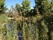
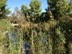

The wetlands are currently drained and dry.
 

The South L.A. wetlands on 54th Street and Avalon Boulevard is now conspicuously dry, as a problem with the basin liner caused city officials to drain the water and try again. The wetlands and park were opened in February of this year, but since then seepage and filtration issues spurred the City to replace the ceramic liner with a plastic one.
Eva Kandarpa Behrend, Councilwoman Jan Perry's communications director, said city officials are hoping the winter months will bring rain so that the wetlands can be refilled naturally. If the next few months aren't wet enough, the basin will have to be manually refilled.
In the meantime, people are using the park's walking paths for jogging and exercise, and the more than $19 million development is poised to enter a second phase. The lot was once an MTA bus yard and a 56,000-square-foot space that used to store old rail cars is still situated on the southside of the park. As of now, the building is fairly run down, empty and unused.
Although original plans for the structure included building a railroad museum, there's not enough money to do so, said Behrend, so they're looking at other options. The police captain at Newton, the local division of the LAPD, is hoping to use the space to expand their community youth group known as PAL, the Police Activities League. The league began about a year ago with only three participants and now includes more than 400 kids.
“I'm getting to the point where I'm limited in the number of kids I can take on and the number of programs I can offer,” Capt. Jorge Rodriguez, who oversees the program, told OnCentral.
But once again the issue of money remains. At minimum, the building needs to be retrofitted for earthquake safety and checked for asbestos and lead paint, said Rodriguez. He estimates the project could cost up to $3 million and most of that money would have to come from a generous private funder or corporate sponsor. Although Perry's office hopes to work with the LAPD to secure funding for the site, the councilwoman will be replaced next year and it will be the new councilmember's responsibility to continue, said Behrend.
Perry's office hopes that the South Los Angeles Wetlands Park will flourish and grow into what the Augustus F. Hawkins Natural Park, located right around the corner, has become over the last decade. This park located at Compton and Slauson, includes a small amphitheater, gardening area, dirt trails and grassy knolls. The wetlands were added a few years ago in 2006 and have exploded with plant and animal life. Augustus Hawkins even has a nature museum that explains plant life found in the area and hosts arts and craft days for local kids. In addition, Newton's PAL program even hosts a few of their courses at the park.
When the new nine-acre wetlands opened this year on Avalon, Perry acknowledged that the space will take time to come into its own.
"This is a grassroots effort that has resulted in bringing nature back to our community," Perry said at the park's debut. "What you see now is just the beginning of something that will … explode into something absolutely beautiful."